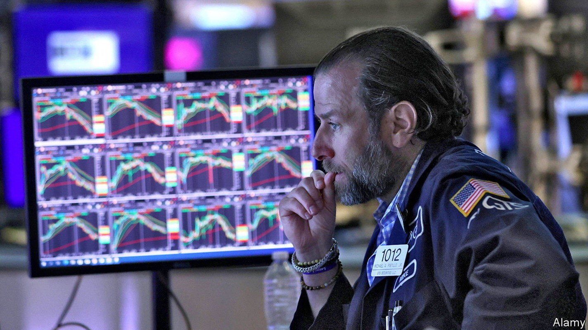
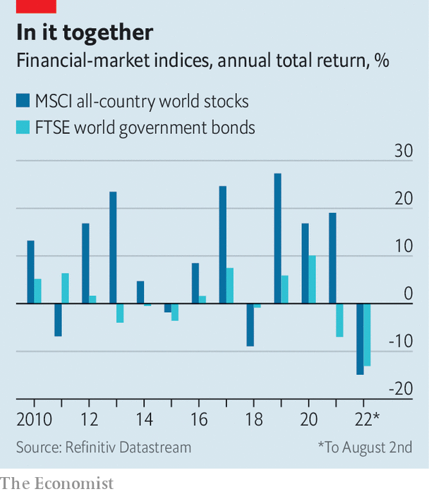
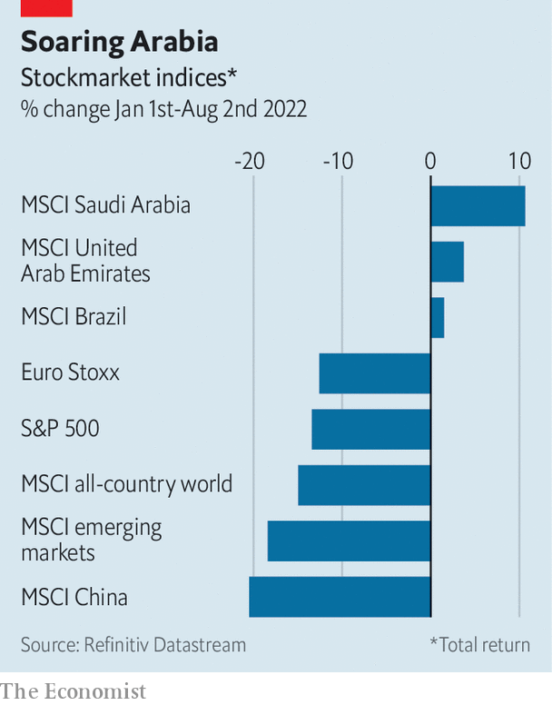

The sell-off has been savage but there are few signs of a crisis. Can that last?

AFTER A FRANTIC sell-off in the first half of the year, investors are taking a breather. The S&P 500 index of American stocks, for instance, is back around the level it was at the start of June. Yet with a little less than five months of 2022 remaining, it would take a turnaround of astonishing proportions to avoid a torrid year in financial markets. The period’s distinguishing characteristics are already clear: the slump has been unusually deep and unusually broad.

If the year ended now, an investor in the MSCI All Country World Index of global stocks would have lost 15%, the lowest return since 2008. The broad-based decline across asset classes has added another element of pain, too. Most obviously, both stocks and bonds have been hammered. The good news is that distress has been concentrated among a few types of assets and firms. Whether that silver lining remains come the end of the year is uncertain.
Such a coincident fall in stocks and bonds is rare. When stock prices fall because of a weakening economy, bond prices usually rise owing to expectations of interest-rate cuts, bolstering a mixed portfolio. Conversely, stocks often benefit from a stronger economy, while bonds sell off. The double dip this time is driven by surging inflation, expected interest-rate rises and a belief that the economic situation will deteriorate. An investment in the FTSE Global World Government Bond Index would have lost 13% so far in 2022, making this the first year since 1986, when the index was established, in which there have been double-digit falls in both stocks and bonds globally.

Moreover, equity markets have been battered almost everywhere. Stocks in Europe, Japan and emerging markets are all down. As a result, there are precious few winners. The Bloomberg Commodity Index, comprising energy, agricultural and industrial commodities, is up by 18% since January. Oil and gas companies have been bolstered by Russia’s invasion of Ukraine, and the massive disruption to oil and gas supplies that followed. MSCI stock indexes for oil exporters like the United Arab Emirates, Saudi Arabia and Kuwait are up, as are those for Brazil and Indonesia, which produce other commodities. The MSCI Chile index is up by more than 20%, but with a market capitalisation of less than $40bn that is not much consolation to investors.
If you were presented with this degree of misery 20 years ago, you might have expected the odd mainstream financial firm to start looking wobbly. Perhaps the most unusual thing of all is how serious distress so far has been largely confined to two groups—both outside mainstream Western finance.
The first is Chinese property developers; sales of which have cratered this year, driven by concerns about the financial health of the companies and the economic impact of protracted covid-19 lockdowns. A bond maturing in January 2024 issued by Country Garden, a developer which until recently held an investment-grade credit rating, now offers a yield of more than 100%, up from 5% this time last year. But China’s strict capital controls mean that the turmoil has produced few reverberations outside the country so far. The second place where distress has emerged is the world of cryptocurrency and decentralised finance. Celsius, Terra and Three Arrows Capital, respectively a crypto-oriented lender, a stablecoin and a crypto-oriented hedge fund, have all gone to the wall.
The big question for the rest of the year is whether the pockets of distress will continue to be isolated. Already the strain in emerging markets, which are confronted with rising global interest rates, as well as elevated food and energy prices, is becoming clear. As of late July, around 36% of issuers on the JPMorgan Chase Emerging Market Bond Index had yields above 10%, a figure which peaked at only 29% during the market panic in March 2020. Fortunately for the West, its mainstream financial institutions have become less exposed to emerging markets over time.
Another source of angst could be the euro zone if the energy crisis intensifies over the winter: something the European Central Bank tried to guard against in July by creating a new mechanism to curb bond-market jitters. And as it has grown harder and more expensive to issue corporate bonds, indebted firms everywhere could face a building funding crunch. One of the more unusual years in finance over the past few decades is not over yet. ■